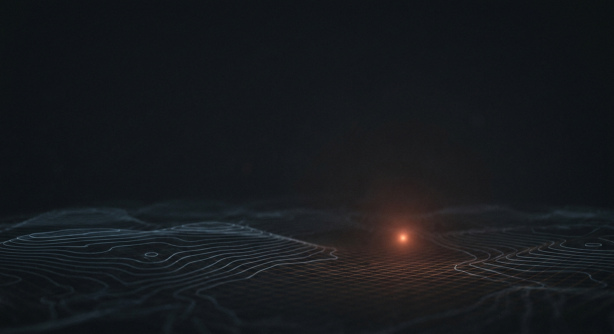

Proctor lets any model or harness read what's on screen and drive it; click, type, check what the app actually drew. It works on background windows, without taking over your machine. The same primitives make it a proper Mac test harness.
Any MCP host, any harness. Proctor hands the model on the other end a real Mac to work: the accessibility tree to read, the pointer and keyboard to drive, the screen to check what happened. It isn't a script. It's hands.
The same tools, plus the discipline testing needs. Settle before you assert, replay to tell flaky from broken, measure a build against its mock with real numbers. You get a result you can trust, and the gaps stated instead of hidden.
Every tool returns evidence, not a promise. Here is what that looks like.
Proctor drives through the accessibility and Apple Events planes. They don't need a window in front, or even on screen, so it reaches background and occluded windows and other Spaces without stealing your focus. You keep working; it keeps going.
The planes Proctor drives through don't need the screen, so a run carries on while the Mac is locked and you're away from it. When a task genuinely needs the machine unlocked, an optional login-path capability opens a short turn bounded by a timeout, does the work, and relocks; the password prompt stays as the fallback, so nobody gets locked out.
Every window capture carries its freshness: the frame status, the dirty rects, the content rect. A stale frame gets flagged, not handed back as if it were current. A green run never rests on a picture of the old state.
The accessibility tree gives you roles, values, and frames. For an app you own, an in-process reflector adds the resolved colours, fonts, corner radius, constraints, and the CALayer model and presentation values, with a render revision. Those are the numbers that check a build against a mock and stand behind a real assertion.
Attach to an app, snapshot a pruned tree with stable ids and since-revision diffs, find by predicate, act on a batch of steps. A six-step flow is one call; each step settles and reports its outcome, a post-state hash, and what changed.
Settle is a conjunction: quiet frames, and no relevant accessibility notifications, and the app's own idle signal when it has one, and a timeout. Determinism is measured by replay, so a race is filed as flaky, not as a bug.
Proctor installs as its own signed background agent, so macOS attributes the grant to Proctor itself, not to whatever tool is driving it. Grant it once, drag it into the list, and it keeps working when you change the model or the harness.
There's a built-in MCP server over HTTP, with optional bearer-token auth. Local by default; you open it up only when you mean to.
Driving an app is the easy half. Proctor carries the parts a test actually needs: a way to know a step finished, a way to tell a flake from a defect, and a report that admits what it didn't cover.
Install the agent, point your model at it, and let it read and drive a real app.
Get started